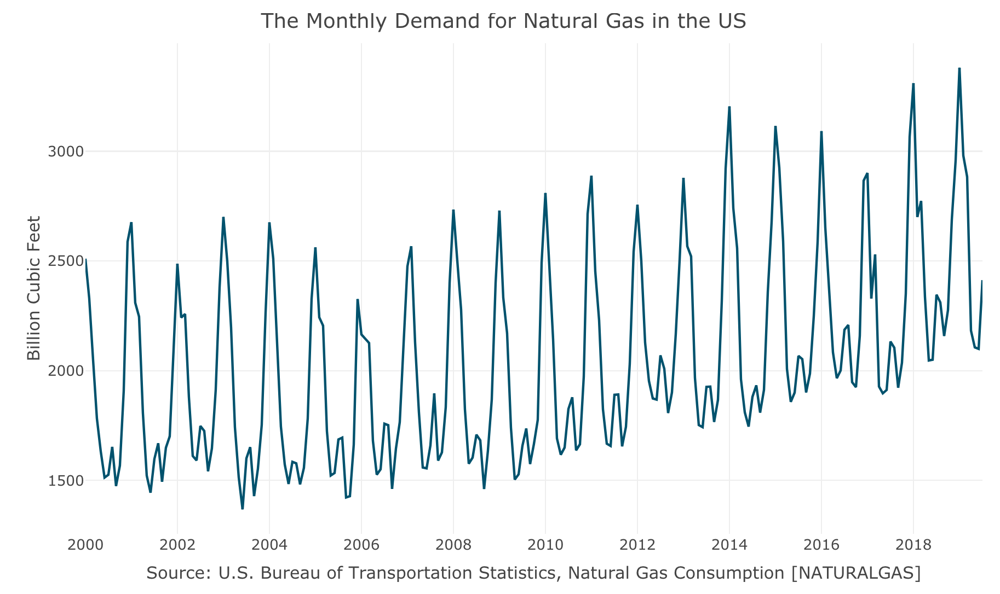
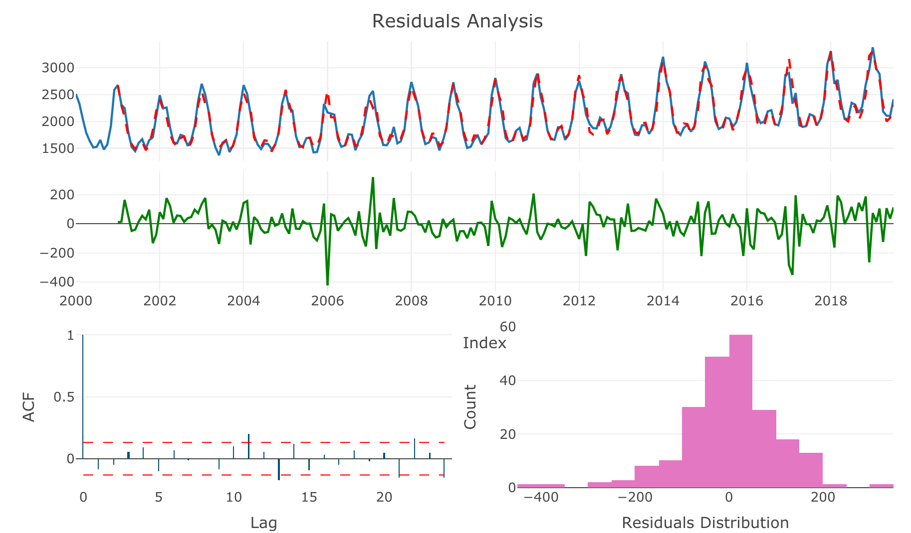
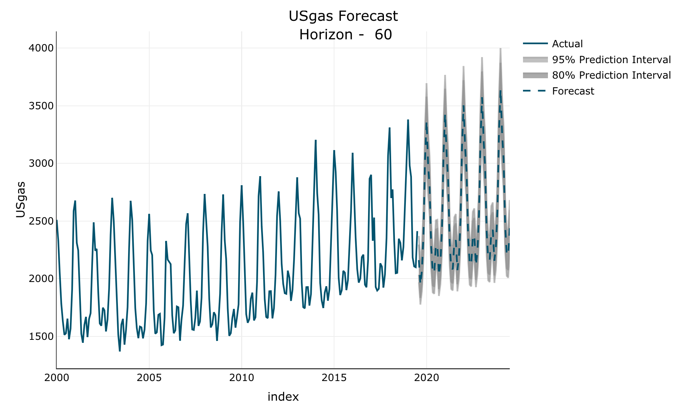

The forecastLM R package provides a framework for forecasting regular time-series data with linear regression models (based on the lm function). It supports both tsibble and ts objects as an input.
Installation
Currently, the package available only on Github version:
remotes::install_github("RamiKrispin/forecastLM")Examples
Forecasting the monthly demand for natural gas in the US:
# Loading the data from the TSstudio package
library(TSstudio)
data("USgas")
ts_plot(USgas,
title = "The Monthly Demand for Natural Gas in the US",
Ytitle = "Billion Cubic Feet",
Xtitle = "Source: U.S. Bureau of Transportation Statistics, Natural Gas Consumption [NATURALGAS]",
Ygrid = TRUE,
Xgrid = TRUE)
Train a forecasting model using the following features:
- Linear trend
- Monthly seasonality
- First and seasonal lags
- Applying log transformation to the series
- Using stepwise function for variables selection
md <- trainLM(input = USgas,
trend = list(linear = TRUE),
seasonal = "month",
lags = c(1, 12),
scale = "log",
step = TRUE)Start: AIC=-1364.47
USgas_log ~ month + linear_trend + lag_scale1 + lag_scale12
Df Sum of Sq RSS AIC
<none> 0.429104 -1364.47
- lag_scale12 1 0.009246 0.438350 -1361.72
- linear_trend 1 0.051063 0.480167 -1341.40
- lag_scale1 1 0.214653 0.643757 -1276.02
- month 11 0.414224 0.843328 -1235.80The function returns a list contains the model, fitted values, residuals, the input series, and the model parameters. The output of the model can be view with the summary function:
summary(md$model)Call:
stats::lm(formula = USgas_log ~ month + linear_trend + lag_scale1 +
lag_scale12, data = df1)
Residuals:
Min 1Q Median 3Q Max
-0.1780124 -0.0271743 0.0032667 0.0289653 0.1326663
Coefficients:
Estimate Std. Error t value Pr(>|t|)
(Intercept) 2.364276205 0.483252934 4.8924 0.0000019928131084291 ***
monthFeb -0.160975117 0.018005811 -8.9402 < 0.00000000000000022 ***
monthMar -0.157537232 0.018236682 -8.6385 0.0000000000000015098 ***
monthApr -0.303900547 0.026042009 -11.6696 < 0.00000000000000022 ***
monthMay -0.269698541 0.030854197 -8.7411 0.0000000000000007785 ***
monthJun -0.218092057 0.032846111 -6.6398 0.0000000002685697600 ***
monthJul -0.124514577 0.030023305 -4.1473 0.0000490062229759277 ***
monthAug -0.174574992 0.027789358 -6.2821 0.0000000019230157294 ***
monthSep -0.283986218 0.032314991 -8.7881 0.0000000000000005741 ***
monthOct -0.169093896 0.032157724 -5.2583 0.0000003599125220358 ***
monthNov -0.084251796 0.026972913 -3.1236 0.002041 **
monthDec 0.039490453 0.019470147 2.0283 0.043809 *
linear_trend 0.000479294 0.000096339 4.9751 0.0000013640958743227 ***
lag_scale1 0.580062379 0.056866457 10.2004 < 0.00000000000000022 ***
lag_scale12 0.122618715 0.057919282 2.1171 0.035443 *
---
Signif. codes: 0 ‘***’ 0.001 ‘**’ 0.01 ‘*’ 0.05 ‘.’ 0.1 ‘ ’ 1
Residual standard error: 0.04542 on 208 degrees of freedom
Multiple R-squared: 0.95466, Adjusted R-squared: 0.95161
F-statistic: 312.84 on 14 and 208 DF, p-value: < 0.000000000000000222The plot_res returns the residuals plot, including the following components:
- Actuals vs. fitted
- The corresponding residuals
- Residuals correlation (ACF)
- Residuals distribution
plot_res(md)
The forecastLM function forecast the future observation of the input object, and the plot_fc returns a plot of the forecast:
fc <- forecastLM(md, h = 60)
plot_fc(fc)